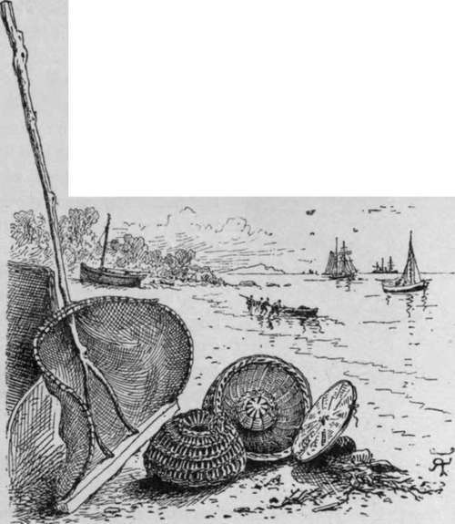
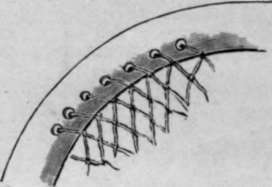
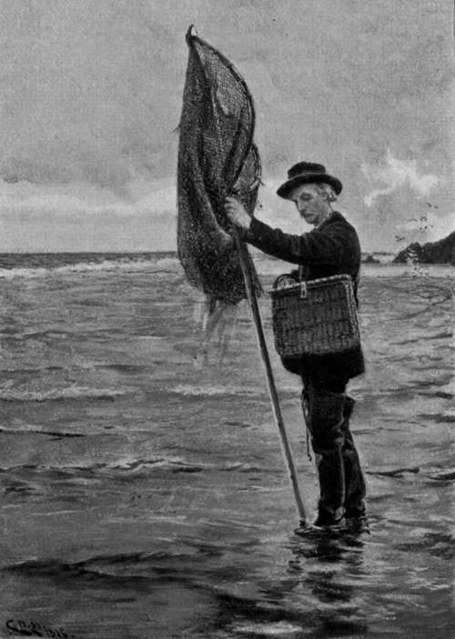

Crawfish. Part 2
Description
This section is from the book "Sea Fishing", by John Bickerdyke. Also available from Amazon: Sea Fishing.
Crawfish. Part 2
Great care must be taken to secure lobsters as they are drawn out of their holes, for they are most powerful swimmers, one flap of their tail sending them many yards backwards shooting through the water ; and, even if you get them out into a small shallow pool where everything is visible, you will probably lose them unless you get them in a net at once. The more a crab is worried by the hook, the more strongly does he wedge himself in his rocky fastness ; but a lobster is more inclined to show fight, and will sometimes lay hold of the hook with such fierceness and bulldog tenacity as to allow himself to be drawn out. After being pricked he sometimes marches out. Professional hookers run the hook under the lobster in a horizontal position, then turn up the point, and gaff smartly.
I need hardly say that it is the early crab-hooker that catches the lobster; for the lowest spring tides come but rarely, and the local people are all on the qui vive to take advantage of them. Lobsters have this delightful peculiarity, that if we take one out of a hole, another will probably be found in the same position at the next spring tide. In this respect they much resemble large trout in rivers. An ancient dame of Skye and lobster catcher of repute, one Effie McArthur, informed Mr. Pritchett, to whom we are indebted for the portraits of our shell fish, that when a lobster is in its soft state, changing its shell, it is usually guarded by a large, well-armed lobster which has its abode in the same little cavern. Thus having hooked out one unfortunate she would search further in the same place for his companion.
There is always the chance of catching a very large conger, and it is just as well to be provided with a club or ' priest' wherewith to destroy him. A Welsh youth who used to fish with me a good deal, hooked a conger of nineteen pounds from under a rock. Before the fish had time to struggle he ran well up the sands with it; but, recovering its senses, it began to twist rapidly round and round in the extraordinary way common to eels, and finally hit my young friend a blow on the side of the head with his tail which, in his own words, ' knocked him silly.' He killed the great thing, but was ever after shy of handling even a conger of moderate size.
I hope no young fishermen, reading this chapter, will think it a simple matter to catch dozens of conger, crabs, and lobsters wherever there happen to be rocks along the sea coast. Unfortunately, these fish are not over-plentiful, and there are many rocky shores where they are so scarce as not to be worth the trouble of going after. On some parts of the Welsh, Irish, and Scotch coasts, however, they are very numerous. The most suitable places are very rough and rugged rocky shores where there is a considerable rise and fall of the water at every tide.
Prawning should certainly be carried on at the same time as lobster and crab hunting. One of the best nets for pushing along a sandy bottom near rocks is shown in the illustration, in company with some prawn pots hailing from Cowes and Plymouth respectively. The latter is shown with its bottom open for the removal of the prawns and baiting purposes. This net is also used for shrimps.
For small rocky pools a round hand net is necessary. It should have a long handle, about four feet six inches long, and the hoop should be quite eighteen inches across, rather flattened towards the front. An ordinary piece of stout wire will do for the hoop if the net, which is best tanned, is laced on to it with wire; but it is far better to have the regular hoops, made for the purpose, which are flattened and drilled with holes in the manner illustrated overleaf. The wire or twine with which the net is attached to the hoop passes through these holes and does not chafe against the rocks.
Prawn or shrimp net, and prawn pots.
It is not everybody who can distinguish a prawn from a shrimp ; in fact, many a small prawn is sold under the name of pink shrimp. The chief characteristic of the prawn is a long serrated spur which projects from its head ; this is almost wanting in the shrimp. These delicate little fish grow to a considerable size in English waters, but not nearly so large as they are often found abroad. In India, where they are very great scavengers, they are recorded a foot in length.
There is considerable skill in catching prawns in rocky pools. One man will take twenty or thirty prawns from one pool, while another may only succeed in inveigling two or three into the net. It is not advisable to begin by jumping into the pool and poking about with the net. The water should rather be approached cautiously, when perhaps a few prawns will be seen swimming about, and with good fortune may be captured without any great disturbance, the net being gently placed underneath them. But after that every prawn in the pool will have gone into hiding, and will probably be found not deep down, but close to the surface under the fringe of seaweed which gently undulates with the rise and fall of the water.
Any little rocky crevice near the surface may contain prawns. The net should be placed over its mouth, and the little fish driven out by means of the crab hook. The net should also be worked along the edge of the seaweed as I have indicated. Small pools which are nothing more nor less than hollows in a big rock, can be baled out, and the prawns will be found kicking about on the bottom, in company maybe with other treasures of the deep or shallows. In some formations the rocks trend seaward in little reefs, and between each reef will be a strip of sand ; such places are best worked with the shrimper's net illustrated on page 339. But beware of weevers, stinging fish, whose portraits may be seen at the end of Chapter XIII. For their sake go not bare of foot.
Rim Of Prawn Net.
An Amateur Shrimper.
Continue to:
- prev: Crawfish
- Table of Contents
- next: Crawfish. Part 3
Tags
fishing, hooks, bait, fishermen, spanish mackerel, mackerel fishing